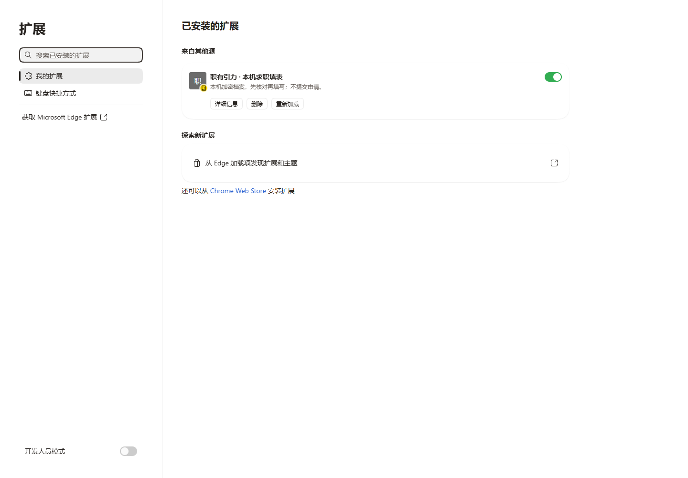
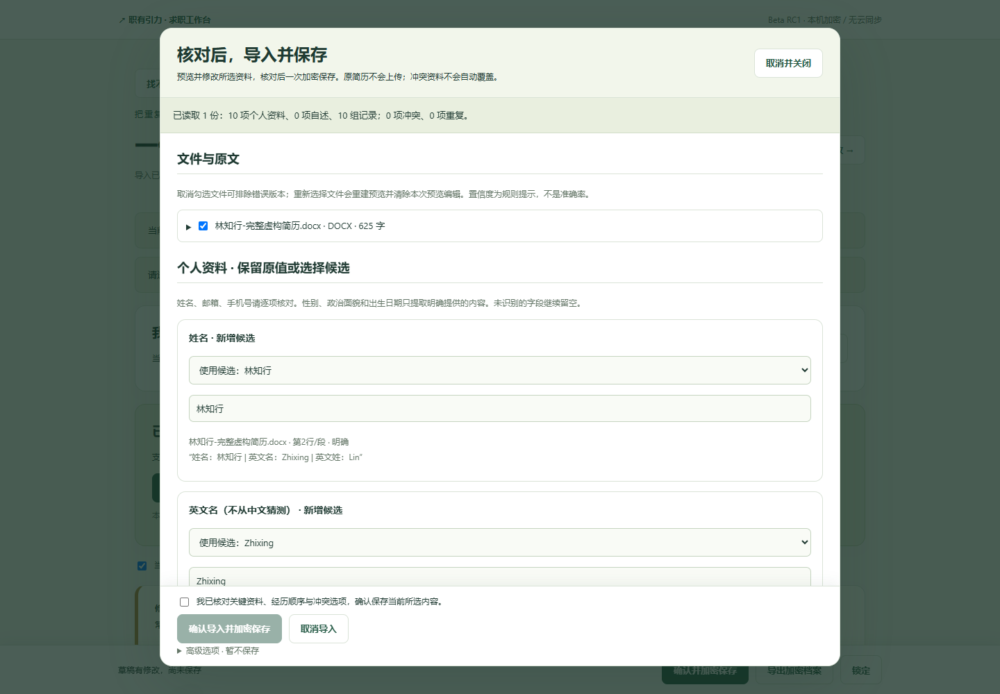
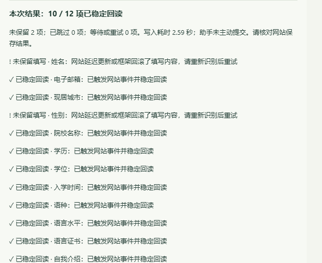

求职工作台 0.4.0 Beta RC1
2026-10-12 · 本机发行候选，未公开推送或部署。沿用现有源码，在独立分支继续开发；原0.2.1/0.3.0目录与冻结包保留。
| 验收范围 | 实际结果 | 证据与限制 |
|---|---|---|
| 原有独立验收 | 37/37 通过 | 原扩展30项+原工作台7项。20份原虚构参考文件SHA256不变；7项岗位功能只在隔离浏览器回放私有历史511条快照，不刷新核验日期，不进源码或ZIP。 |
| 普通中文、英文和三步经历表单 | 100/100断言正确 | 95个填写值全部正确，4项保护留空，1项已有值保留。多段经历、日期、多选、下拉与跨步骤保留均实际检查。 |
| 资料导入到真实MV3工具栏填写 | 32/32 通过 | 本机DOCX/PDF、预览修订、来源、显式保存、附件字节、描述版本、备份、陈旧窗口CAS、并行恢复、断线不转存；含13项复杂控件场景。 |
| 额外增强DOCX/文本PDF | 2/2文件，8/8阶段通过 | 每份72个明确字段及72条来源，独立实际文件选择→预览→保存→重开。教育/实习/工作/项目/技能/证书/语言各2条，学历学位与自述分开。标题和虚构声明2行保留为未归类原文；人工修正0。DOCX的Word版面仍未验证。 |
| 授权、HTTP与数据边界 | 11/11 通过 | 无批准/异源/他端口/iframe/新nonce/未知键/明文/撤销均拒绝。真实HTTP Host403、Origin403、POST405；JSON安装目录UTF-8补测通过。 |
| 单元与引擎回归 | 81/81；浏览器20/20 | 历史44项基线保留。浏览器20项内含原生开发18项回归；框架为相似受控模型fixture，不冒充全部React/Vue真实项目。 |
| Windows版本复用保护 | 4/4实际检查通过 | 同目录复用同一PID；另一个目录不能悄悄打开错误版本；复制PID记录也不能停止原服务。原反例已记录，重新编译实际回归通过。 |
| Windows发行启动/停止 | 8/8实际检查通过 | 运行编译后的EXE、打开本机首页，自带Node24.19、精确安装目录、四入口、仅127.0.0.1监听；停止器核对PID/二进制路径/启动时间。Windows11实机；其他Windows设备仍需安装验收。 |
| 关键身份误填、自动提交 | 已测模拟场景均为0 | 包括家庭/紧急联系人/证件/声明保护、日期精度、最高学历来源和5种标签/祖先提交攻击。未向真实企业提交测试申请。 |
| 日常Edge已安装 | 待本人手动安装 | 实际扩展在隔离Edge155.0.4283.45、Playwright1.62.1、Node24.19运行；不使用日常浏览器资料，不宣称已经为你安装。Chrome同协议准备完成，但本机未找到Chrome，未声称Chrome实机通过。 |
| 真人完整耗时对照H01 | 用户明确免除 | 历史SKIP原封保留；本轮不作为阻塞项。没有真人结果，不承诺节时30%。 |
| 自动化对照H02 | 完成，但不支持节时结论 | 同一原表单，48项均正确、提交0：逐字段脚本1660ms，扩展完整流程4785ms。共用冷启动1379ms只测一次并平等列入，合计3039ms/6164ms。扩展约2.88倍慢；没有增加基线延迟。这是自动化方法差异，不能冒充真人效率。 |
| 真实招聘兼容R01、30%节时目标 | 未验证／未证实 | 北森真实页面仅作只读结构参考，无真实申请写入；Greenhouse/Ashby/其他站点完整表单未逐站通过。时间目标不降低后宣布通过。 |
减少重复操作后的实测
新用户首页直接打开扩展档案，不先连接网页；空档案设置口令后直接打开真实简历选择窗口；核对预览后一次“确认导入并加密保存”，没有第二次保存。工作台不因此取得档案读写权限。旧离线档案先明确选择去向，连接与迁移控件默认折叠。
11项真实Edge导入检查通过：新旧DOCX/PDF、缺失日期、无效邮箱预览修正、身份冲突阻断、真实双窗版本冲突保留原主档案及候选、草稿锁定恢复、小窗口主按钮常驻可见。增强两份各72字段按新版一次保存重新解密核对并重开，8个阶段通过。空岗位包误报错误的反例已修复，合法空快照、坏版本和HTTP404三项检查分别验证正常空状态与明确错误，不生成假岗位。
独立审查发现的问题已经修复
新鲜独立审查没有继承实施者对代码的结论，验证出两项问题。P1：选项或选择器嵌套在提交按钮内会触发浏览器默认提交；统一交互祖先检查后，三个原反例独立复测全部零提交。P2：网页与扩展的锁属于不同origin，分别读写恢复草稿会丢失一份；改成后台统一原子追加/消费，40组并发追加和40组交错保存检查通过，真实两窗口各自恢复了自己的修改，有效档案未改变。
另修复了刷新后新文档错误继承批准。首次失败记录与修复后记录均保留。测试脚本的折叠区域等待、Node fetch忽略Host、Windows客户端读取JSON编码等测试传输问题也保留说明，没有把错误请求结果当成产品通过。
另修复迁移容量边界：远端档案提交成功后，本机额外副本遇真实QuotaExceededError仍明确显示已迁入、保留原离线档案，并可继续从主档案导出；没有把完成的迁移报成完全失败。网页申请连接不再自动打开缺少活动页权限的弹窗，由本人点击工具栏一次取得权限再批准，避免反复打开。过长测试profile路径造成的Windows LevelDB写入失败与旧双弹窗竞争属于单独保存的测试环境记录，不拿无用例的中断尝试当通过。
实际截图
全部来自真实运行，资料均为虚构，没有绘制假界面。扩展管理截图只证明隔离测试实例，不证明日常Edge已安装。



网络、安全与许可
导入和档案处理默认本机完成，无云端AI、统计脚本或账号。观测到的产品页面/扩展请求没有未经确认的外部简历传输。本机HTTP不提供简历接口；桥只传加密封包与字段结构。原“网站即时读取”风险测试的本机接收器在用户确认后收到了虚构输入，用来证明目标网站能即时读取已填内容；不宣称填写后资料仍对网站保密。
源码与完整Git历史进行了高置信度Token/私钥/邀请链接模式检查，结合独立源码审查、虚构样本来源和分发白名单。193项供应资源及字体源码许可保留；Windows Git文本CRLF差异与原LF哈希一致，记录原始与规范化哈希。它不能检测任意语义个人信息，不是安全认证。Node确切版本许可证随运行时提供。第三方岗位五来源均未取得再分发依据，公开部署门禁保持关闭。
具体未支持与未验证项
- 北森iTalent：邻近标签、Phoenix/DIV控件的本机同类结构通过；真实企业多步骤、联动日期和完整保存未通过站点验收。给出的私人邀请链接不打包、不输入测试申请。
- Greenhouse与Ashby：原搜索接口与链接保留；真实招聘表单未全面逐页验收。
- BOSS直聘、智联、猎聘等商业平台：没有平台专用兼容器，不批量抓取，不绕过访问限制。
- iframe、Shadow DOM、可编辑搜索组合框、虚拟化选项、任意非标准控件、富文本、文件自动上传、OCR/旧DOC/密码PDF仍人工处理。加载超时、重复选项、缺资料和更晚的网站回滚可能需要重扫。
- 引擎结果是有界稳定回读，不证明真实网站后端最终保存，也不能替网站控制所有输入事件的后续动作。本人核对、下一步和最终提交必须保留。
- 附件最多2份、每份512KiB；扩展恢复草稿最多5份，加密前档案3MB。口令遗忘无法找回。工作台收藏/投递仍按原本机记录存储，并不包含在档案加密备份中。
- DOCX样本实际导入已验证；缺少LibreOffice，Word版面渲染未完成，PDF3页经Poppler实际检查。
证据位置与复现
可公开范围的摘要位于本目录evidence，原始私有日志、HAR、虚构加密备份、初始失败与详细断言保留在维护源码的.local/beta-qa以及.local/beta-enhanced-samples，绝不自动进Git/发行包。复现脚本与原虚构参考随源码提供，路径和步骤见维护交接与docs/TESTING.md。Windows最终ZIP、源码ZIP、扩展ZIP的校验值由交付清单记录；旧冻结ZIP不覆盖。
维护交接 · 完整操作指南